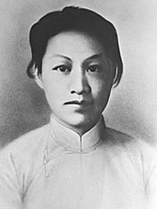

赵一曼
赵一曼（1905—1936），原名李坤泰，著名的抗日民族女英雄。她早年投身革命，加入中国共产党，后奔赴东北参加抗日游击战争，先后在黑龙江等地领导抗日斗争。
她英勇善战，多次带领队伍打击日本侵略者和伪军，被敌人称为“女游击队长”。1936年，她在战斗中不幸负伤被俘，面对敌人的酷刑始终坚贞不屈，最后在哈尔滨英勇牺牲，年仅31岁。
在家风方面，赵一曼以刚毅、坚强和无私的革命精神为后代树立了榜样。她在狱中写给儿子的遗书中，嘱咐他要好好学习，继承母亲未竟的抗日事业。这封遗书成为中国革命史上著名的“红色家书”，深深感动了一代又一代人。
赵一曼的英雄事迹和红色家风，展现了中华民族巾帼不让须眉的豪情，成为黑龙江乃至全国人民学习的楷模。她的精神永载史册，激励无数青年投身民族复兴的伟大事业。
← 返回中国地图